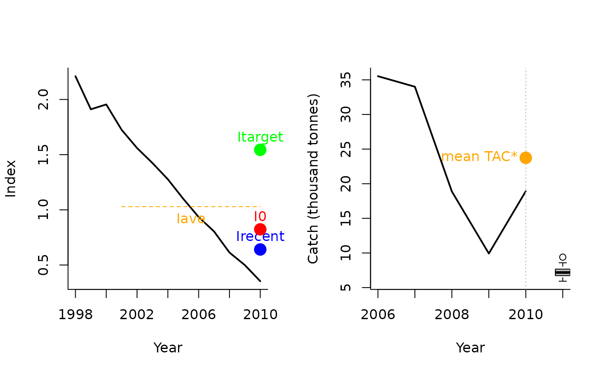

Itarget1 with an MPA
Itarget1_MPA.RdA example mixed control MP that uses the Itarget1 output control MP together with a spatial closure.
Arguments
- x
A position in the data object
- Data
A data object
- reps
The number of stochastic samples of the MP recommendation(s)
- plot
Logical. Show the plot?
- yrsmth
Years over which to smooth recent estimates of surplus production
- xx
Parameter controlling the fraction of mean catch to start using in first year
- Imulti
Parameter controlling how much larger target CPUE / index is compared with recent levels.
Value
An object of class Rec-class with the TAC, Spatial slot(s) populated
Details
The TAC is calculated as: If \(I_\textrm{recent} \geq I_0\): $$\textrm{TAC}= 0.5 \textrm{TAC}^* \left[1+\left(\frac{I_\textrm{recent} - I_0}{I_\textrm{target} - I_0}\right)\right]$$
else: $$\textrm{TAC}= 0.5 \textrm{TAC}^* \left[\frac{I_\textrm{recent}}{I_0}^2\right]$$
where \(I_0\) is \(0.8 I_{\textrm{ave}}\) (the average index over the 2 x yrsmth years prior to the projection period),
\(I_\textrm{recent}\) is the average index over the past yrsmth years, and
\(I_\textrm{target}\) is Imulti times \(I_{\textrm{ave}}\),
and \(\textrm{TAC}^*\) is:
$$(1-x)C$$
where \(x\) is argument xx and C is the average catch over the last 5 years of the historical period.
This mixed control MP also closes Area 1 to fishing.
This MP has been included for demonstration purposes of a mixed control MP.
Required Data
See Data-class for information on the Data object
Itarget1_MPA: Cat, Ind, LHYear, Year
Rendered Equations
See Online Documentation for correctly rendered equations
Examples
Itarget1_MPA(1, MSEtool::Atlantic_mackerel, plot=TRUE)

#> TAC (median) Area 1 Area 2
#> 7.180982 0.000000 1.000000